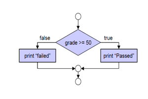
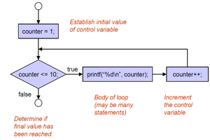
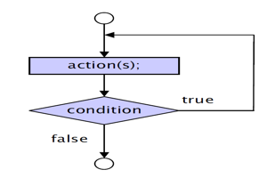
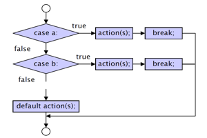
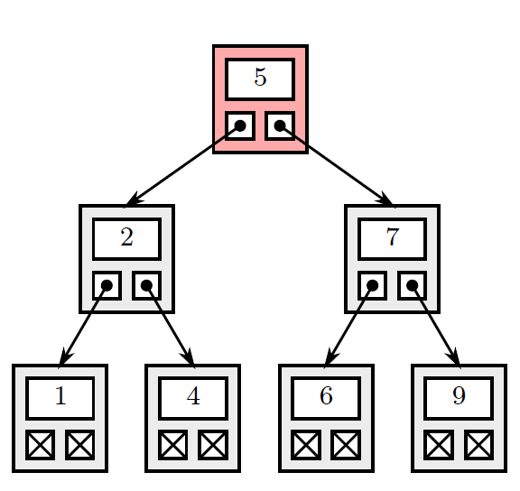

#include <stdio.h>
#include <stdlib.h>
int sum = 5+6;
printf("The sum is: %d\n", sum);
%8.5f
This means that if the number is shorter than 8 characters(n characters) the output will include (8-n) whitespaces before printing the number and the number will be printed with 5 decimal places.
However, if the number has more than 8 characters it won't have an an effect on the number and will jsut print to 5 decimal places.
NB -> Use brackets when doing more complex operations
float sum = (5+6+7)/18;
8 bits = 1 byte
Hence, doubles can take bigger numbers than floats as it has more memory allocated to store a bigger number.
If your first integer assigned has an adress of 3000, the second would be 3004 (3000 + 4 bytes)
scanf(" %c", &integer);
NB -> When using a character you need a whitespace before.
#include <time.h>
int main(){
srand(time(NULL));
int rndValue = (rand()% (upper - lower + 1)) + lower;
return 0;
}
Need to seed the rand function otherwise it won't return a random value
NB -> (rand( ) % (upper - lower + 1)) + lower;
Procedure in terms of:
E.g.
name = first + last;
Say: Append the last name to the first
E.g.
Initialise passes to 0
Initialise failures to 0
Initialise student counter to 1
While student counter is less than or equal to 10
Input the next exam result
If the student passed
Add 1 to passes
else
Add 1 to failures
Add 1 to student counter
End ifelse
End while
Start and end point: use an empty circle
Symbols:




3 Types
average = (float) average/counter;
E.g.
int a = 10;
float b = 5.5;
// Compiler automatically converts 'a' to float
float result = a + b;
E.g.
int a = 10;
float b = 5.5;
// Explicit casting to avoid loss of precision
float result_explicit = (float)a + b;
Same for a-- and --a, just decrement by 1
E.g.
int a = 1;
printf("a++ = %d\n", a++);
printf("++a = %d\n", ++a);
Output:
a++ = 1
++a = 3
E.g. (A1 Question 2)
int x = 3;
if(++x == 4){
printf("x = %d\n", x++);
}
else{
printf("x = %d\n", --x);
}
printf("now x = %d\n", x);
Output:
x = 4
now x = 5
switch(value){
case 1:
(code)
break;
case 2:
(code)
break;
default:
(code)
}
can also use characters and other variable types
#include <math.h>
All of the below return a double
Useful functions:
ceil(9.2) = 10.0
ceil(-9.8) = -9.0
floor(9.2) = 9.0
floor(-9.8) = -10.0
E.g.
#include <stdio.h>
void greet();
int main() {
greet();
return 0;
}
void greet() {
printf("Hello, there!\n");
}
#include "filename.h"
#include <stdlib.h>
Format of a header:
#ifndef MYHEADER_H
#define MYHEADER_H
int add(int a, int b);
#endif // MYHEADER_H
enum Color {
RED,
GREEN,
BLUE
};
enum Color myColor = RED;
Creates a new variable that can only take the values specified
staticTry not to use Gloabl Variables
Function calls itself
E.g.
long fibonnaci(long n){
long x;
if(n ==0 || n == 1){
x =n;
}
else{
x = fibbonaci (n-1) + fibbonaci(n-2);
}
return x;
}
Structure that stores related data items of the same data type
int marks[10];
Can use #define SIZE 10 by the imports and int marks[SIZE]
char str[20];
scanf("%s", string);
int myArray[24];
myFunction(myArray, 24);
int linearSearch(const int array[], int key, int size){
int n =0;
int keyLocation = -1;
do{
if(array[n] == key){
keyLocation =n;
}
n++
}while((keyLocation == -1) && (n <size));
return keyLocation;
}
int binarySearch(const int b[], int searchKey, int low, int high){
int middle;
int keyLocation = -1;
while((keyLocation ==-1) && (low <=high)){
middle = (low+high)/2;
if(searchKey == b[middle]){
keyLocation = middle;
}else if(searchKey < b[middle]){
high = middle-1;
}else{
low = middle -1;
}
}
return keyLocation;
}
void sortArray(int array[], int sizeOfArray){
int temp;
for(int i = 0; i < sizeOfArray; i++){
for(int j = 0; j < sizeOfArray -1; j++){
if(array[j] > array[j+1]){
temp = array[j];
array[j] = array[j+1];
array[j+1] = temp;
}
}
}
}
(not sure if knowing the others is necessary)
void selectionSort(int array[], size_t length){
for(size_t i =0; i<length; j++){
size_t smallest = i;
for(size_t j = i +1; j <length; j++){
if(array[j]<array[smallest]){
smallest = j;
}
}
swap(array, i, smallest);
}
}
void swap(int array[], size_t first, size_t second){
int temp = array[first];
array[first] = array[second];
array[second] = array[first];
}
void insertionSort(int arr[], int n) {
int i, key, j;
for (i = 1; i < n; i++) {
key = arr[i];
j = i - 1;
// Move elements of arr[0..i-1] that are greater than key to one position ahead of their current position
while (j >= 0 && arr[j] > key) {
arr[j + 1] = arr[j];
j = j - 1;
}
arr[j + 1] = key;
}
}
int b[row][column] = {{1,2}, {3,4}};
printf("%d", b[0][1]);
A systematic process of identifying and fixing errors (bugs) in a computer program
Methods:
Pointers contain memory adresses as their values
Indirection - Using an adress (pointer) to access a variable
int *xPtr;
xPtr = &x;
printf("%d", *xPtr);
printf("%d", (int) xPtr);
i.e.
printf("%d", &*xPtr);
Will return the address stored in the pointer not the value at the address
void cubeByRefference(int *nPtr){
*nPtr = *nPtr * *nPtr * *nPtr;
}
No need to return a value because the value at the address of nPtr is changed
const -> Variable can't be changed
const int* myPtr = &x;
int* const myPtr =&x;
const int* const myPtr = &x;
void swap(int* elementPtr, int* element2Ptr);
void bubbleSort(int* const array, const int size){
for(int pass = 0; pass <size -1, pass++){
for(int j = 0; j<size -1; j++){
if(array[j]> array[j+1]){
swap(&array[j], &array[j+1]);
}
}
}
}
void swap(int* elementPtr, int* element2Ptr){
int hold = *elementPtr;
*elementPtr = *element2Ptr;
*element2Ptr = hold;
}
sizeof(myArray)
Returns the size of the array * how much memory an element takes
E.g. array size 10 of int (4 bytes) = 40
myPtr++;
Goes from memory adress 3000 to 3004 (in this case its integers (4 bytes) )
newPtr = malloc(numberOfElements * sizeof(int));
const char *suit[4] = {"Hearts", "Diamonds", "Clubs", "Spades"};
Collections of related variables under one name
struct coord{
double x;
double y;
}; //this is called a definition
struct coord lCorner = {0.0, 0.0};
struct coord *cPtr = &lCorner;
lCorner.x = 10.5;
(*cPtr).x = 10.5;
cPtr->x = 10.5;
struct coord addCoordVal(struct coord a, struct coord b);
void addCoordRef(const struct coord *aPtr, const struct coord *bPtr, struct coord *rPtr);
typedef struct coord Point;
typedef struct {
double x;
double y;
} Point;
Point pa;
typedef struct{
char *name;
int value;
} Element;
int main(void){
Element arr[20];
arr[0].name = "Hydrogen";
arr[0].value = 1;
printf("%s %d\n", arr[0].name, arr[0].value);
}
Element *Ptr = arr;
printf("%s %d\n", Ptr->name, Ptr->value);
//increment pointer for second record in array
printf("%s %d\n", (Ptr+1)->name, (Ptr+1)->value);
int no = 118;
Element *arr;
arr = malloc(no * sizeof(Element));
arr[0].name = "Hydrogen"
NB: Remember to free the memory after use
free(arr);
FILE *fptr;
if((fptr = fopen("myList.txt", "w")) == NULL){
printf("Error! opening file");
//exits program if the file pointer is NULL
exit(1);
}
fclose(cfPtr);
Anything with a b just means the same but binary mode.
int fgetc(FILE *stream);
int fputc(int character, FILE *stream);
char *fgets(char *str, int n, FILE *stream);
E.g.
char buffer[100];
while (fgets(buffer, sizeof(buffer), file) != NULL) {
// Print the line
printf("%s", buffer);
}
int fputs(const char *str, FILE *stream);
int value;
char text[50];
fscanf(file, "%d %s", &value, text);
int value = 42;
char text[] = "Hello, World!";
fprintf(file, "Value: %d\nText: %s\n", value, text);
int feof(FILE *stream);
void rewind(FILE *stream);
file = fopen("binary_data.bin", "wb+");
if (file == NULL) {
printf("Error opening file for writing.\n");
return 1;
}
struct Record record1 = {1, 3.14};
fwrite(&record1, sizeof(struct Record), 1, file);
struct Record readRecord1;
fread(&readRecord1, sizeof(struct Record), 1, file);
int fseek(FILE *stream, long int offset, int whence);
Sets file position pointer to a specific position
E.g.
struct coord xPnt = {1.0, 5.0};
fseek(fPtr, 4*sizeof(struct coord), SEEK_SET);
fwrite(&xPnt, sizeof(struct coord), 1, fPtr);
This code moves the pointer past 4 struct coord elements in the file and then prints xPnt after the 4th coord element in the text file (i.e. making it the 5th element)
struct listNode{
char data;
struct listNode *nextPtr;
};
typedef struct listNode ListNode;
Most important functions associated with linked lists:
value = 5;
currentPtr = startPtr;
while(currentPtr != NULL && value != currentPtr-> data){
currentPtr = currentPtr->nextPtr;
}
void insertAfter(ListNode *previousPtr, int value) {
ListNode *newPtr = (ListNode*)malloc(sizeof(ListNode));
if (newPtr == NULL) {
printf("Memory allocation failed.\n");
exit(1);
}
// Set the data of the new node
newPtr->data = value;
// Make the new node point to the next node after the specified node
newPtr->nextPtr = previousPtr->nextPtr;
// Make the previous node point to the new node
previousPtr->nextPtr = newPtr;
}
void removeNode(ListNode *previousPtr, ListNode *currentPtr) {
// Create a temporary pointer to the current node
ListNode *tempPtr = currentPtr;
// Update the nextPtr of the previous node to skip over the current node
previousPtr->nextPtr = currentPtr->nextPtr;
// Free the memory allocated for the current node
free(tempPtr);
}
struct stackNode {
int data;
struct stackNode* nextPtr;
};
typedef struct stackNode StackNode;
typedef StackNode* StackNodePtr;
void pushFront(StackNodePtr* topPtr, int value) {
StackNodePtr newNode = (StackNodePtr)malloc(sizeof(StackNode));
if (newNode != NULL) {
newNode->data = value;
newNode->nextPtr = *topPtr;
*topPtr = newNode;
} else {
printf("Memory allocation failed. Unable to push value.\n");
}
}
void pop(StackNodePtr* topPtr) {
if (*topPtr == NULL) {
printf("Stack is empty. Unable to pop from the front.\n");
return; //exit the function
}
StackNodePtr tempPtr = *topPtr;
*topPtr = tempPtr->nextPtr;
free(tempPtr);
}
struct queueNode {
int data;
struct queueNode* nextPtr;
struct queueNode* prevPtr;
};
typedef struct queueNode QueueNode;
typedef QueueNode* QueueNodePtr;
void addToBack(QueueNodePtr* frontPtr, QueueNodePtr* backPtr, int value) {
QueueNodePtr newNode = (QueueNodePtr)malloc(sizeof(QueueNode));
if (newNode != NULL) {
newNode->data = value;
newNode->nextPtr = NULL;
newNode->prevPtr = *backPtr;
if (*backPtr != NULL) {
(*backPtr)->nextPtr = newNode;
} else {
*frontPtr = newNode;
}
*backPtr = newNode;
} else {
printf("Memory allocation failed. Unable to add to the back.\n");
}
}
void removeFromFront(QueueNodePtr* frontPtr, QueueNodePtr* backPtr) {
if (*frontPtr == NULL) {
printf("Deque is empty. Unable to remove from the front.\n");
return;
}
int value = frontPtr->data //not neccessary if you don't want the value
/*remove the prev pointer of the second node, because we don't want it to point to a removed node*/
if ((*frontPtr)->nextPtr != NULL) {
(*frontPtr)->nextPtr->prevPtr = NULL;
} else {
*backPtr = NULL;
}
*frontPtr = (*frontPtr)->nextPtr;
}
struct treeNode{
struct treeNode *leftPtr;
int data;
struct treeNode *rightPtr;
};
typedef struct treeNode TreeNode;
typedef TreeNode *TreeNodePtr;
void inOrder(treeNodePtr treePtr){
if(treePtr != NULL){
inOrder(treePtr->leftPtr);
printf("%3d", treePtr->data);
inOrder(treePtr->rightPtr);
}
}

Output: 1 2 4 5 6 7 9
void preOrder(TreeNodePtr treePtr){
if(treePtr != NULL){
printf("%3d", treePtr->data);
preOrder(treePtr->leftPtr);
preOrder(treePtr->rightPtr);
}
}
Output: 5 2 1 4 7 6 9
void postOrder(TreeNodePtr treePtr){
if(treePtr != NULL){
postOrder(treePtr -> leftPtr);
postOrder(treePtr -> rightPtr);
printf("%3d", treePtr->data);
}
}
Output: 1 4 2 6 9 7 5